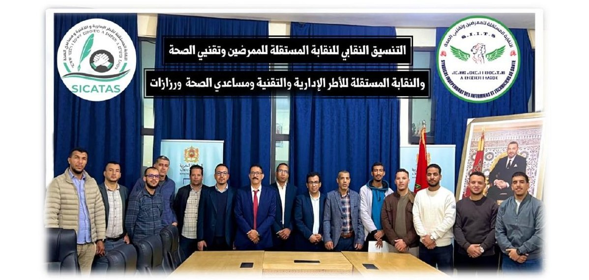

ورزازات: 21 التزاماً بعد 8 ساعات من الحوار مع اللجنة الجهوية، أبرزها صرف تعويضات الحراسة بصيغة النقابة

إلى عموم الشغيلة الصحية والإدارية والتقنية ومساعدي الصحة، وإلى الرأي العام المحلي والإقليمي والجهوي.
على إثر البيان الإنذاري المشترك الصادر بتاريخ 4 نونبر 2026، الذي دق من خلاله التنسيق النقابي ناقوس الخطر بشأن جملة من الاختلالات الإدارية والتدبيرية والتنظيمية بمستشفى سيدي حساين بناصر ومستشفى التخصصات بوكافر بورزازات، انعقد يوم الأربعاء 11 نونبر 2026 اجتماع مع اللجنة الجهوية للحوار الاجتماعي، بحضور ممثلين عن المديرية الجهوية للصحة والحماية الاجتماعية، بمقر المندوبية الإقليمية للصحة والحماية الاجتماعية بورزازات.
وجاء هذا الاجتماع تتويجاً لمسار من الترافع النقابي والتواصل والمراسلات، واستجابة لمطالب البيان الإنذاري المشترك. وامتدت أشغاله لأكثر من 8 ساعات إلى حدود منتصف الليل، في نقاش مستفيض ومسؤول أسفر عن مجموعة من الالتزامات، أهمها:
1) التعجيل بصرف التعويضات عن الحراسة والإلزامية والمداومة إلى حدود 30 شتنبر 2026، بعد استكمال مرحلة الالتزام، داخل أجل أقصاه 20 يوماً من تاريخ توقيع المحضر. 2) اعتماد صيغة الاحتساب التي تقدمت بها ودافعت عنها النقابة المستقلة للممرضين وتقنيي الصحة، بما يتيح شمول هذه التعويضات مستحقات الثلث الثالث من سنة 2026، خلافاً لإعلان الإدارة الذي اقتصر على النصف الثاني من 2025 والنصف الأول من 2026. 3) تفعيل جميع مقررات انتقال المساعدين في العلاج. 4) تسوية وضعية الأطر الحاصلة على مذكرات مصلحة مؤقتة. 5) تطبيق القانون وضمان مبدأ المساواة بين جميع الأطر الصحية والإدارية. 6) تيسير استفادة الأطر الصحية وذويهم من الخدمات الصحية بالمركز الاستشفائي الإقليمي سيدي حساين بناصر. 7) تفعيل التكوين المستمر للأطر الصحية والإدارية. 8) تفعيل الدورية الوزارية رقم 11 الخاصة بالحوار الاجتماعي، والتجاوب مع المشاكل المستعجلة. 9) تنظيم العمل الإداري بإصدار مذكرة مصلحة، وضبط مسار المراسلات والطلبات عبر مكتب الضبط. 10) السكن الوظيفي: التذكير بالاتفاق مع المندوب الإقليمي على تخصيص خمس وحدات سكنية للأطر التمريضية والتقنية والإدارية ومساعدي الصحة وفق معايير الاستحقاق. 11) احترام التسلسل الإداري والاختصاصات طبقاً للنظام الداخلي للمؤسسة، خاصة في تدبير الموارد البشرية والتداريب الاستشفائية والأدوية والمستلزمات الطبية. 12) إحداث مصلحة المساعدة الطبية المستعجلة SAMU، مع توفير التجهيزات وتكوين الأطر المعنية وتحفيزها. 13) إحداث مجلس للممرضين، بناءً على مراسلة رسمية تقدمت بها النقابة المستقلة للممرضين وتقنيي الصحة. 14) تعزيز مستشفى التخصصات بوكافر بالموارد البشرية الصحية والإدارية الكافية. 15) تحسين ظروف اشتغال الممرضين بمصلحة المستعجلات. 16) تحسين خدمات المطبخ والتغذية عبر لجنة مختصة. 17) تفعيل لجنة المراقبة والتتبع الخاصة بشركات المناولة. 18) معالجة إشكالات تدبير الأجهزة والمعدات الطبية عبر اجتماع يضم مختلف المتدخلين. 19) ضمان استمرارية تزويد المصالح بالأدوية والمستلزمات الطبية. 20) إحداث مقر جديد لمصلحة المختبر. 21) احترام الجدولة الزمنية للتداريب الاستشفائية وإعطاء الأولوية لطلبة المعهد العالي للمهن التمريضية وتقنيات الصحة بورزازات، والقطع مع انتحال الصفة ومزاولة المهام خارج الإطار القانوني.
وإذ يثمن التنسيق النقابي ما أفضى إليه هذا الاجتماع من تجاوب مع عدد من المطالب، فإنه يؤكد أن هذه النتائج ثمرة للمواقف النقابية المسؤولة والترافع المستمر، وأن عدداً من الملفات لا يزال يتطلب إجراءات عملية وحسماً نهائياً، خاصة احترام الاختصاصات، وضمان استقلالية القرار الإداري، وحماية الأطر من مختلف أشكال الضغط.
ويؤكد التنسيق أن الدفاع عن الحقوق المهنية والاجتماعية للشغيلة الصحية ليس منفصلاً عن الدفاع عن حق المواطن في العلاج، وأن توقيع محضر الاتفاق خطوة أولى، والمعيار الحقيقي لنجاح الحوار هو التنزيل الفعلي للالتزامات داخل الآجال المحددة، دون أن يشكل ذلك تنازلاً عن المطالب المشروعة أو اعتباراً لكل الملفات مسواة نهائياً.
كرامة مهنيي الصحة، وتحسين ظروف اشتغالهم، مدخل أساسي لصون حق المواطن في العلاج والارتقاء بجودة الخدمات الصحية.
فتح في تطبيق النقابة